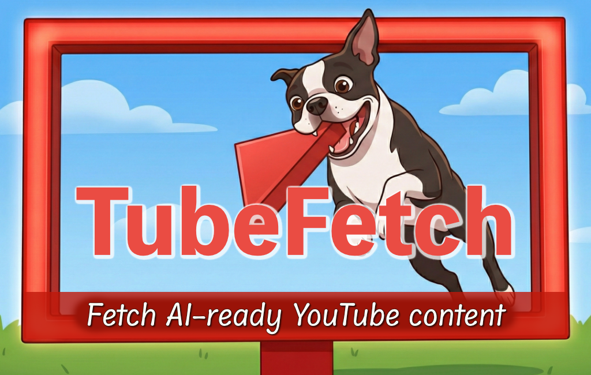

tubefetch fetches and extracts metadata, transcripts, and media from YouTube videos in formats optimized for AI/LLM pipelines — with batch processing, caching, retries, and rate limiting.
pip install tubefetch
tubefetch dQw4w9WgXcQ
Fetches metadata, transcript, and exports to JSON and plain text formats.
tubefetch dQw4w9WgXcQ --download video
Downloads the video (merged video+audio MP4) along with metadata and transcript.
Extract title, channel, duration, tags, and upload date via yt-dlp or YouTube Data API v3.
Fetch transcripts with language preference and fallback, export as JSON, plain text, WebVTT, or SubRip.
Produce plain text transcripts optimized for AI pipelines with content hashes and optional token counts.
Process multiple videos concurrently with per-video error isolation and progress tracking.
Skip already-fetched data automatically; use --force for selective re-fetching.
Powered by gentlify with exponential backoff, jitter, and smart classification of transient vs. permanent errors.
Token bucket algorithm shared across workers prevents API throttling and service errors.
Use as a CLI tool for quick extraction or import as a Python library for programmatic workflows.